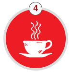

A person can donate blood either in a licensed blood bank, blood donation camps or at a blood mobile.
Search for blood bank near you :
Blood Banks:
Any person can walk-in voluntarily any time round the clock at their own convenience to donate blood in a licensed blood bank. Beside, an In-house camp can be organized in a blood bank on pre-fixed dates with the Organizers and Blood Bank in charge.
Outdoor camps:
Prefixed venues by Organizers like educational institutions, industrial and commercial houses etc. Blood Banks organize camps in these sites/ premises on a fixed day as decided by SBTC.
What to expect when you visit a Blood Bank or Blood Donation Camp:
Registration (10 mins)
Donor fills up the registration form and gives his consent for donation.
Medical Check up (5 mins)
Donors Medical History & life style is asked, check up of temperature, blood pressure, pulse and haemoglobin.
Donation (8 mins)
Phlebotomist draws unit (350ml/450ml) of blood.
A new sterile needle is used to draw each unit and the needle is destroyed after it has been used.
It takes less than 10 min.

Refreshment (10 mins)
Enjoy Snacks and drinks juice to replenish fluids.
Registration (10 mins)
Donor fills up the registration form and gives his consent for donation.
Medical Check up (5 mins)
Donors Medical History & life style is asked, check up of temperature, blood pressure, pulse and haemoglobin.
Donation (8 mins)
Phlebotomist draws unit (350ml/450ml) of blood.
A new sterile needle is used to draw each unit and the needle is destroyed after it has been used.
It takes less than 10 min.
Refreshment (10 mins)
Enjoy Snacks and drinks juice to replenish fluids.